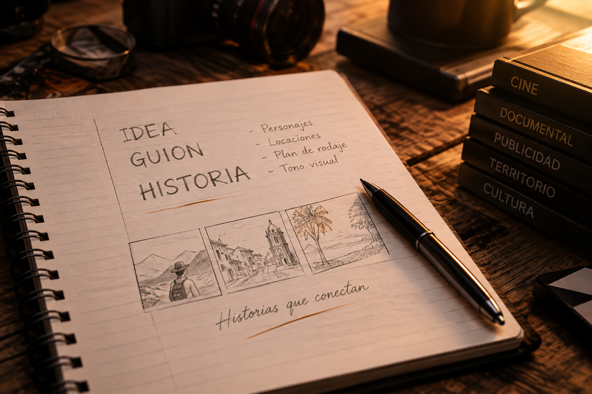
De la idea a la pantalla
Desarrollo creativo de proyectos audiovisuales. Acompañamos ideas desde la conceptualización, escritura y estructuración hasta su viabilidad.
Ver más →
PRODUCTORA AUDIOVISUAL · COLOMBIA
Creamos experiencias audiovisuales que conectan marcas, personas e historias.
QUIÉNES SOMOS
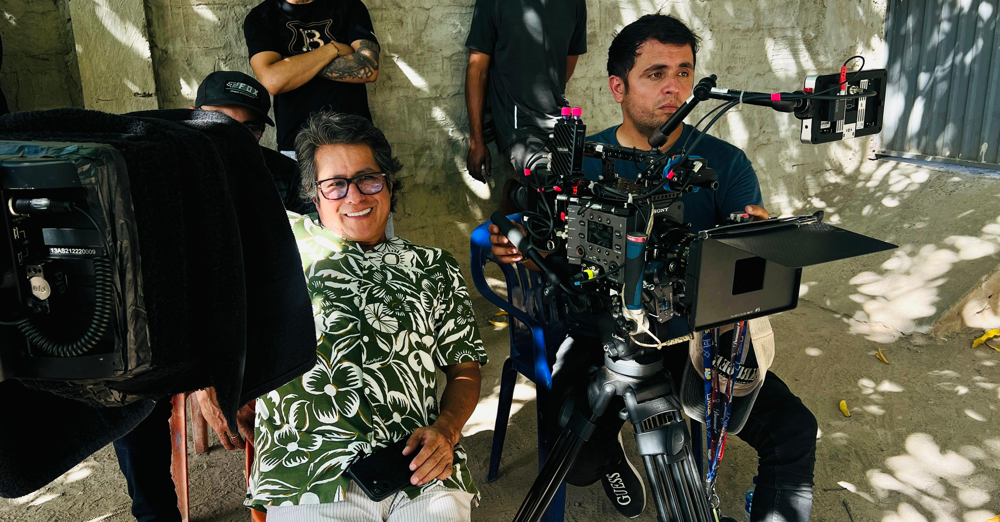
Chontaduro es una productora audiovisual colombiana con más de 12 años de experiencia, fundada por Herney Luna, director y productor con una amplia trayectoria en la industria audiovisual nacional.
Durante más de una década, la productora ha desarrollado su experiencia alrededor de la creación, dirección y producción de contenidos audiovisuales, construyendo una mirada propia sobre la forma de contar historias.
Su fundador, Herney Luna, cuenta con 20 años de experiencia como director de cine y televisión, participando en producciones en Colombia y realizando labores de dirección general y codirección para proyectos de Caracol TV, RCN, Netflix, Telemundo y ViX, entre otros. Varias de estas producciones se han posicionado en los primeros lugares de distintas plataformas y canales de televisión al momento de su estreno.
Hoy, Chontaduro reúne experiencia, creatividad y nuevas miradas para desarrollar proyectos de cine, televisión, publicidad, contenidos digitales, proyectos culturales e institucionales.
Nuestra esencia está profundamente conectada con las historias, las personas y los territorios, llevando cada proyecto desde la idea hasta la pantalla.
AÑOS CONTANDO HISTORIAS
AÑOS DE EXPERIENCIA
DE SU FUNDADOR
LO QUE HACEMOS
Creamos, producimos y llevamos historias a la pantalla.
De una idea a un rodaje, de una marca a un territorio, de una experiencia a una historia.

Desarrollo creativo de proyectos audiovisuales. Acompañamos ideas desde la conceptualización, escritura y estructuración hasta su viabilidad.
Ver más →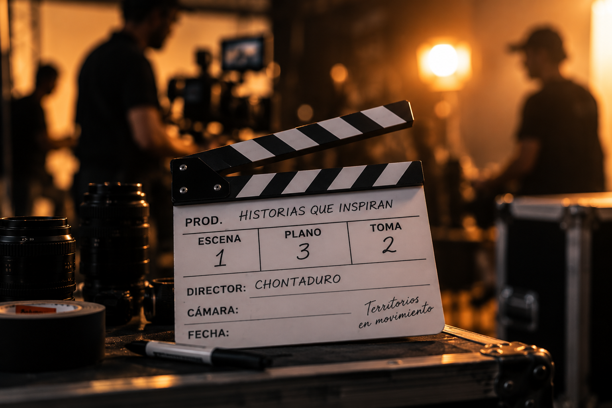
Planeación, guion, casting, scouting de locaciones, permisos, equipo técnico y producción creativa para un rodaje eficiente y seguro.
Ver más →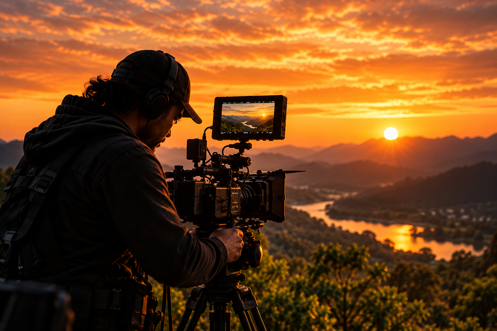
Producción de contenidos para marcas, empresas, instituciones, proyectos culturales y plataformas, con altos estándares de calidad.
Ver más →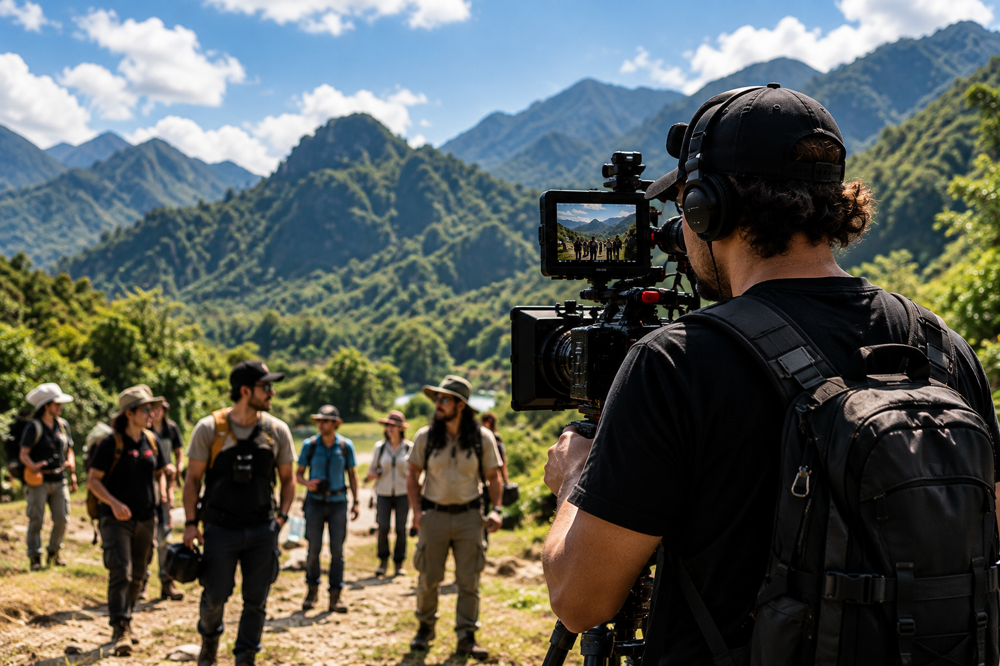
Registro audiovisual en todo el país, con experiencia en locaciones urbanas, rurales y de difícil acceso. Nos movemos donde están las historias.
Ver más →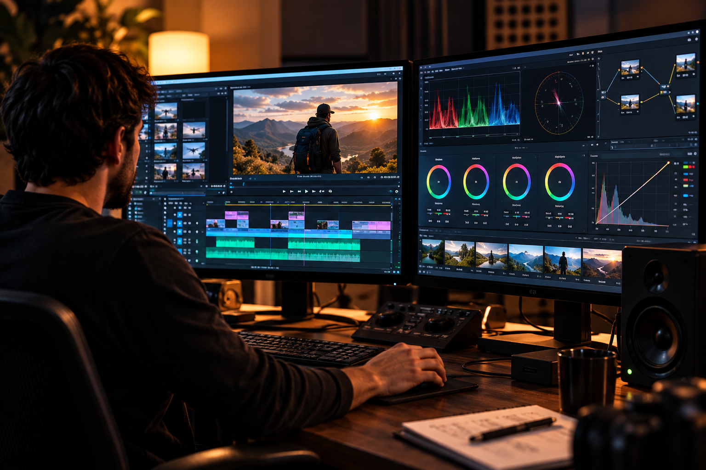
Edición, corrección de color, animación, gráficos, VFX y finalización de contenidos con estándares de calidad para cine, televisión y plataformas digitales.
Ver más →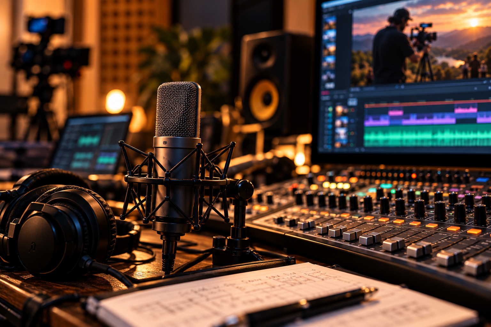
Grabación, diseño, edición, mezcla y postproducción de sonido para cine, documentales, publicidad y contenidos digitales.
Ver más →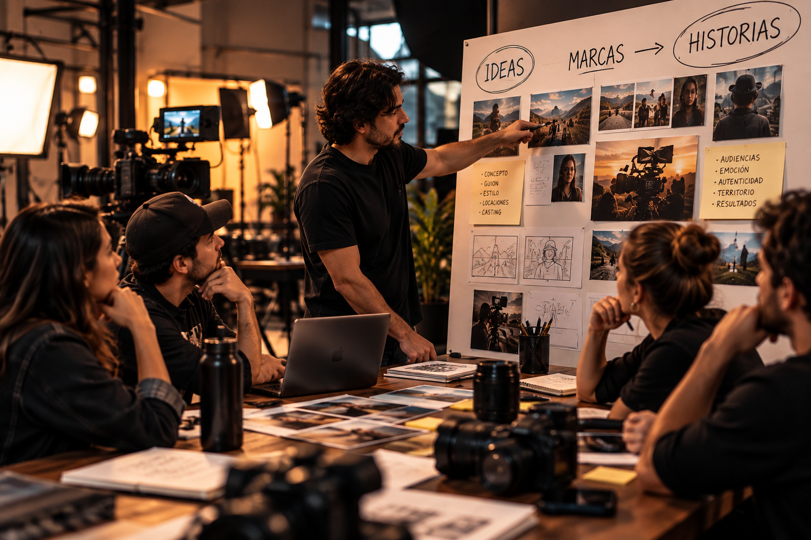
Comerciales, campañas y contenido de marca que conectan con las personas a través de historias auténticas y memorables.
Ver más →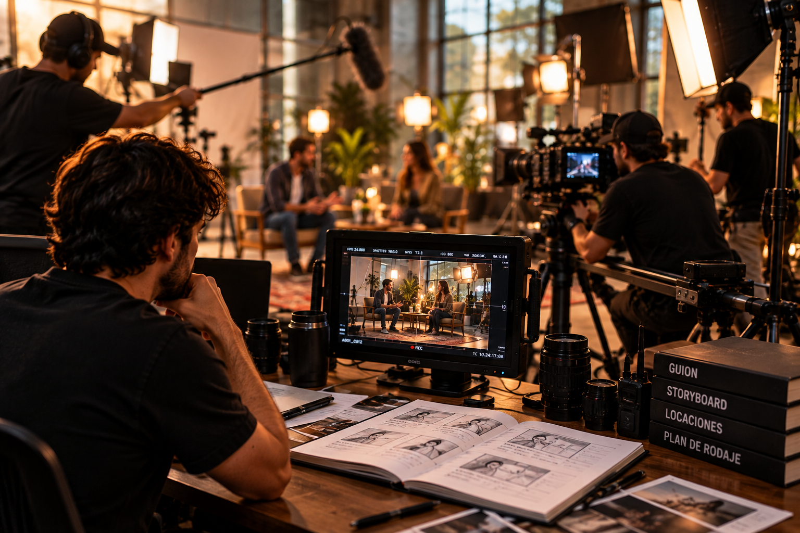
Desarrollo y producción de largometrajes, series, documentales, programas y formatos para televisión y plataformas de streaming.
Ver más →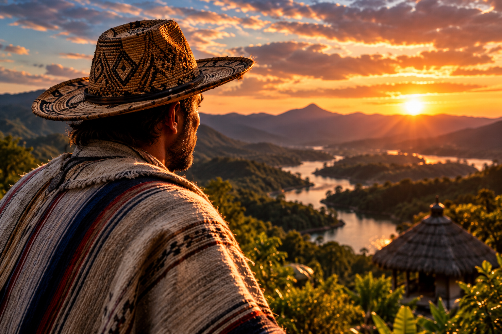
Documentales y contenidos que visibilizan comunidades, patrimonio, diversidad cultural, medio ambiente y las realidades de nuestro país.
Ver más →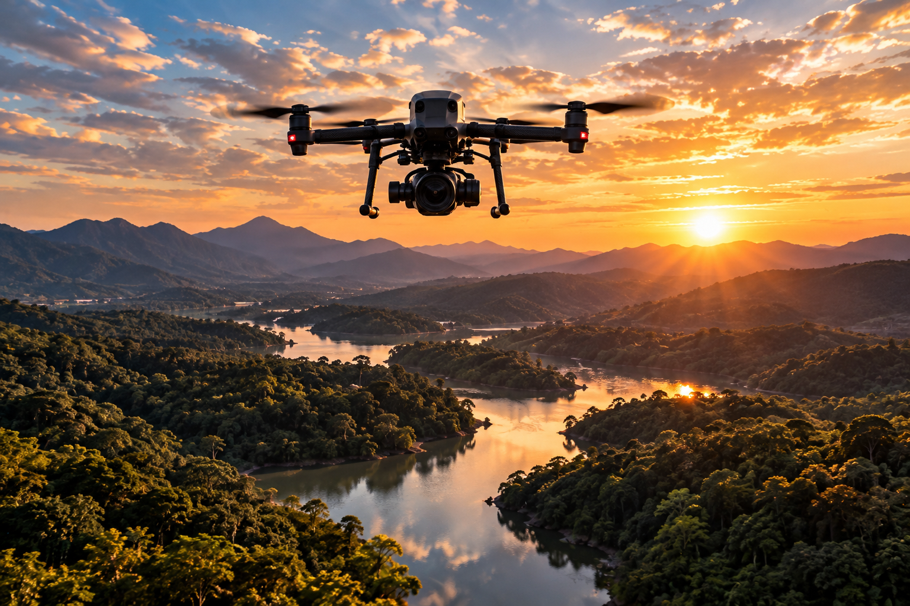
Videos para redes sociales, branded content, contenido vertical, series cortas, podcasts en video y formatos innovadores para audiencias digitales.
Ver más →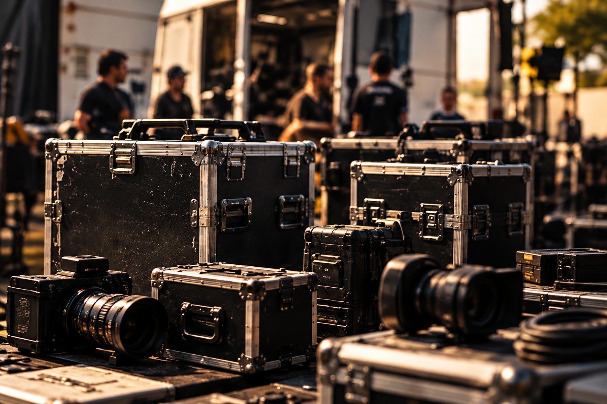
Alquiler de equipos, crew técnico, logística y servicios de producción para otras productoras, agencias y proyectos audiovisuales.
Ver más →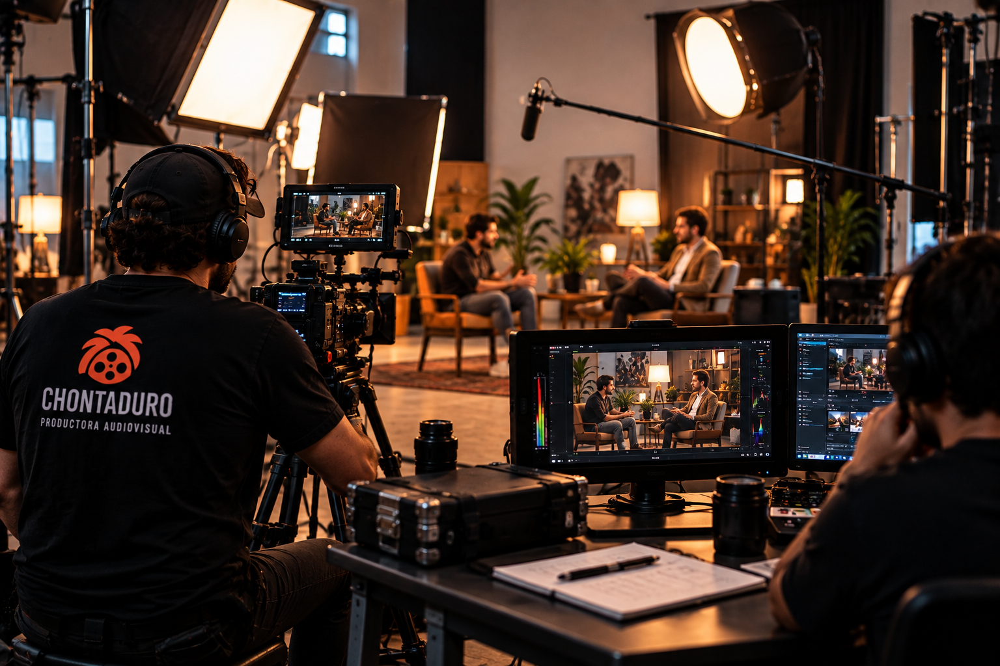
Formación práctica en creación audiovisual para estudiantes, comunidades, empresas e instituciones. Aprender haciendo, desde la experiencia real de un rodaje.
Ver más →PROYECTOS DESTACADOS
Historias que han llegado a la televisión, el cine y las plataformas, formando parte de una trayectoria de más de dos décadas en la industria audiovisual.

Temporadas 2, 3 y 4 · Director
Telemundo · Netflix · 2017–2019

Director
Caracol TV · Netflix · 2021

Director
Netflix · 2023

Director
Colombia · 2018

Director
RCN TV · 2014

Director
RCN TV · 2010–2011

Director
Telemundo · Netflix · 2018–2019

Temporada 2 · Director
RCN TV · 2016

Director
Caracol TV · ViX · 2022

Director
RCN TV · 2011–2012

Director
RCN TV · 2017

Director
RCN TV · 2006–2007

Director
RCN TV · TELESET · 2005–2006

Director
RCN TV · 2003–2004

Director
RCN TV · 2011–2012
FORMACIÓN AUDIOVISUAL
Creamos espacios de formación donde la creatividad, la narrativa y las herramientas audiovisuales se convierten en experiencias prácticas.
Conocer talleresHABLEMOS
Cuéntanos sobre tu proyecto y construyamos juntos una propuesta audiovisual.
Cuéntanos tu proyecto